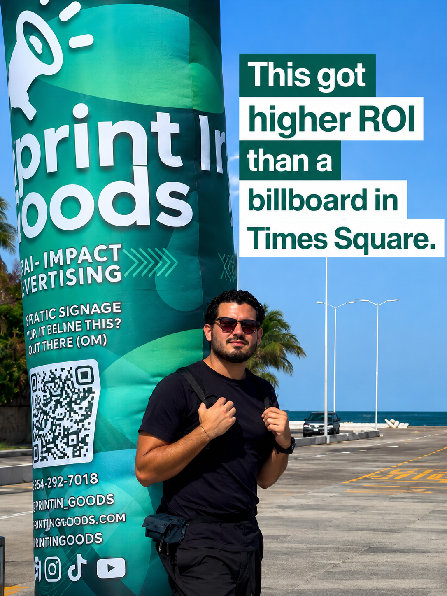
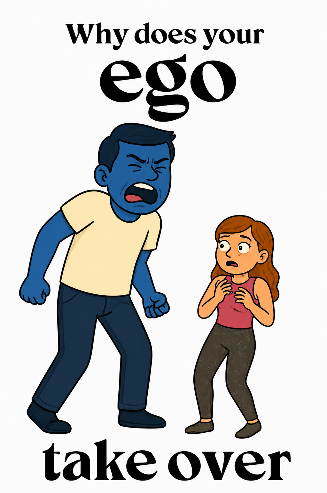

Reel · Más vistoThe Sky Backpack makes your brand impossible to ignore.
Reel de producto · Instagram
136K
views
988
comentarios
Ver en Instagram
Disponible para nuevos proyectos
Soy Bochi — editor de video y contenido para social media. Convierto material crudo en reels, TikToks y piezas de YouTube que la gente sí termina de ver.
01 — Trabajo seleccionado
Una selección corta. Cada proyecto incluye edición, ritmo, sonido y entrega lista para publicar.

Reel · Más vistoReel de producto · Instagram
136K
views
988
comentarios
Ver en Instagram
Instagram · ver reel
106Kviews

Reel · 9:16Instagram · ver reel
1.9Kviews
02 — Servicios
Reels, TikTok y Shorts con hooks en los primeros 2 segundos, subtítulos dinámicos y ritmo pensado para retención.
Documentales, vlogs y video-ensayos. Estructura narrativa, b-roll, sound design y gráficos que sostienen 20+ minutos.
Intros, lower thirds, transiciones y animación de texto en After Effects, alineados a la identidad de tu marca.
Corrección y look cinematográfico en DaVinci Resolve. Consistencia de color entre cámaras, tomas y episodios.
Mezcla, limpieza de audio, SFX y música con licencia. El 50% de un buen video es lo que se escucha.
Calendarios, formatos y análisis de métricas para que cada pieza publique con intención, no por inercia.
03 — Sobre mí
Llevo 6 años editando para creadores, marcas y agencias. Empecé cortando vlogs en una laptop prestada; hoy edito series completas que suman millones de vistas. Mi regla: si un frame no aporta, se va.
Trabajo remoto, entrego en plazos de 48–72 horas para formatos cortos y me integro a tu flujo: Frame.io, Notion, Drive o lo que uses.
"Bochi entiende el algoritmo mejor que nosotros. Triplicó la retención promedio de nuestros reels en dos meses."
04 — Contacto
Cuéntame tu proyecto y te respondo en menos de 24 horas con propuesta y tiempos.